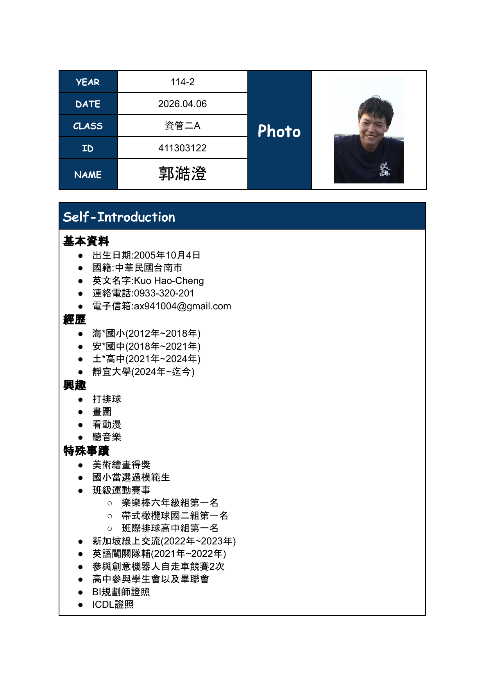
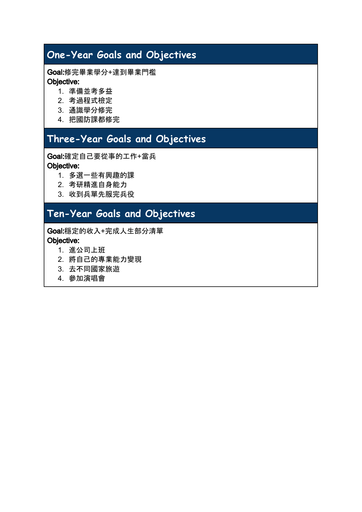

求職履歷

未來規劃

目前想從事的行業:網頁設計師
理由:
Holland的測試平台中，我的結果為C事務 x S社會，說明自己在做事情方面容易獲得他人的信任，會按部就班注重細節，而在UCAN的測試結果中其實也夾雜著A藝術的成分在，而且自己也學過一點美術，所以有一定的基礎美感，在製作網頁時也會先將草稿產出再進行製作，減少思考所需的時間。
工作內容:
規劃網站資訊架構與視覺版面，製作設計稿與前端標記，提升使用體驗與一致性， 整理需求與頁面地圖，製作版面圖與互動流程，設計頁面元件與圖像，建立字體與色彩規範，切版與標記、樣式與互動效果，與工程人員銜接資料，設計行動裝置版面與自適應規格，檢測瀏覽器相容與無障礙，建立設計系統元件庫與文件，維護版次與素材權限
充實自我規劃:
1.加強資料庫管理系統的知識，了解後端跟前端是如何運作
2.去別系修平面設計或色彩學，讓自己對顏色更敏感
3.學習製作3D遊戲，了解平面跟立體的差異、跳脫平面設計的思考模式

